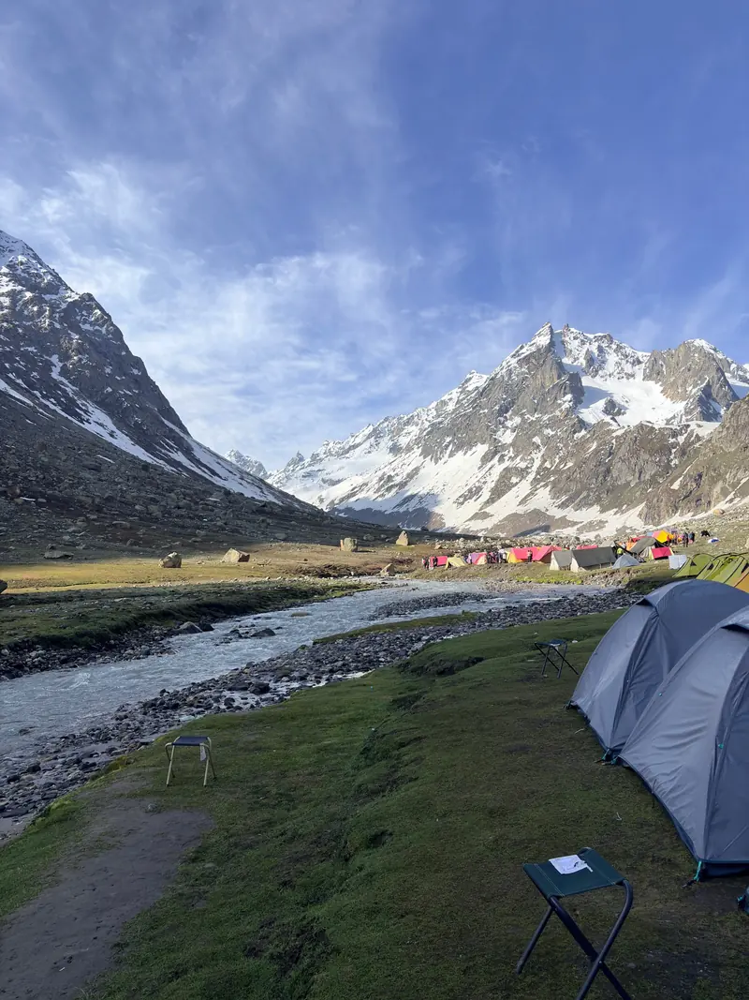
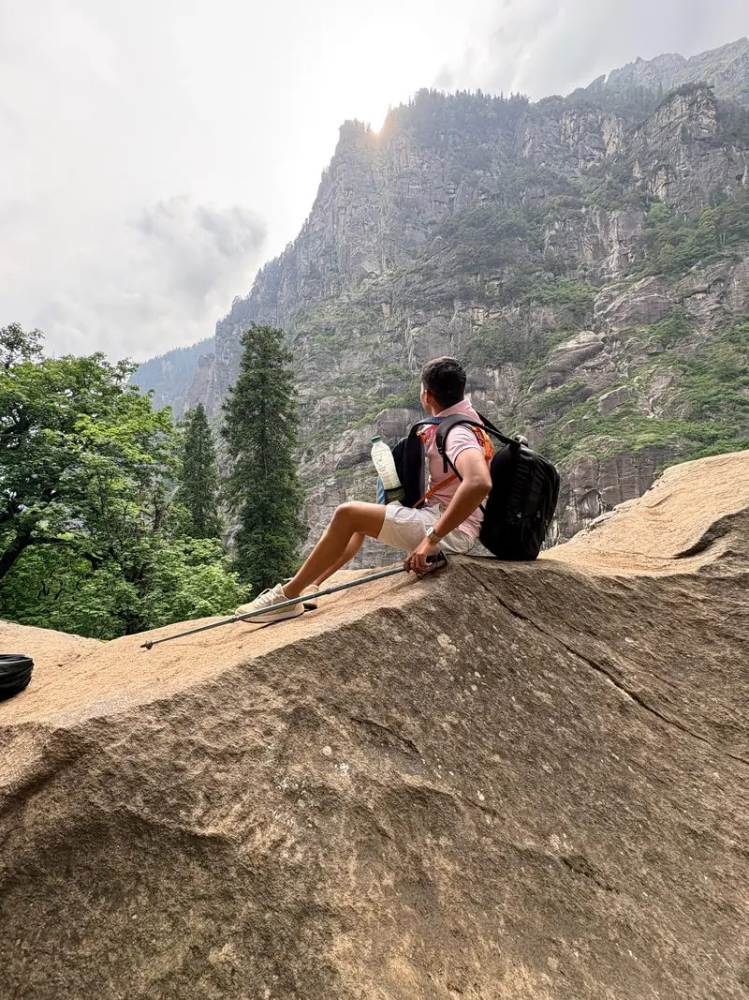
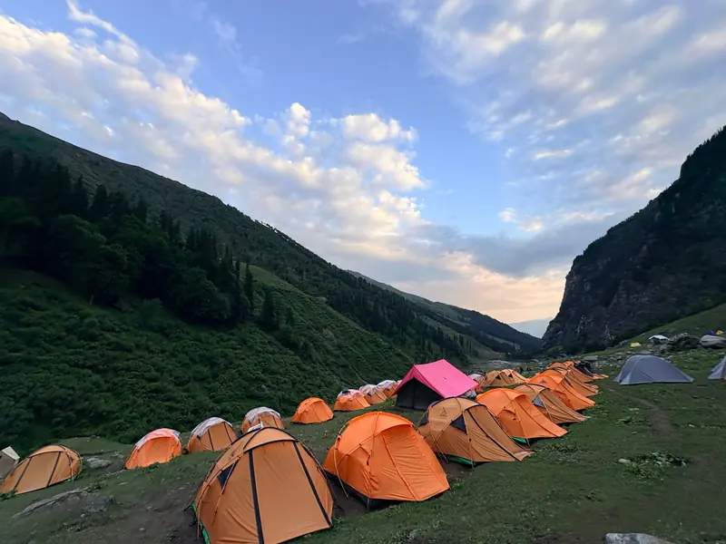
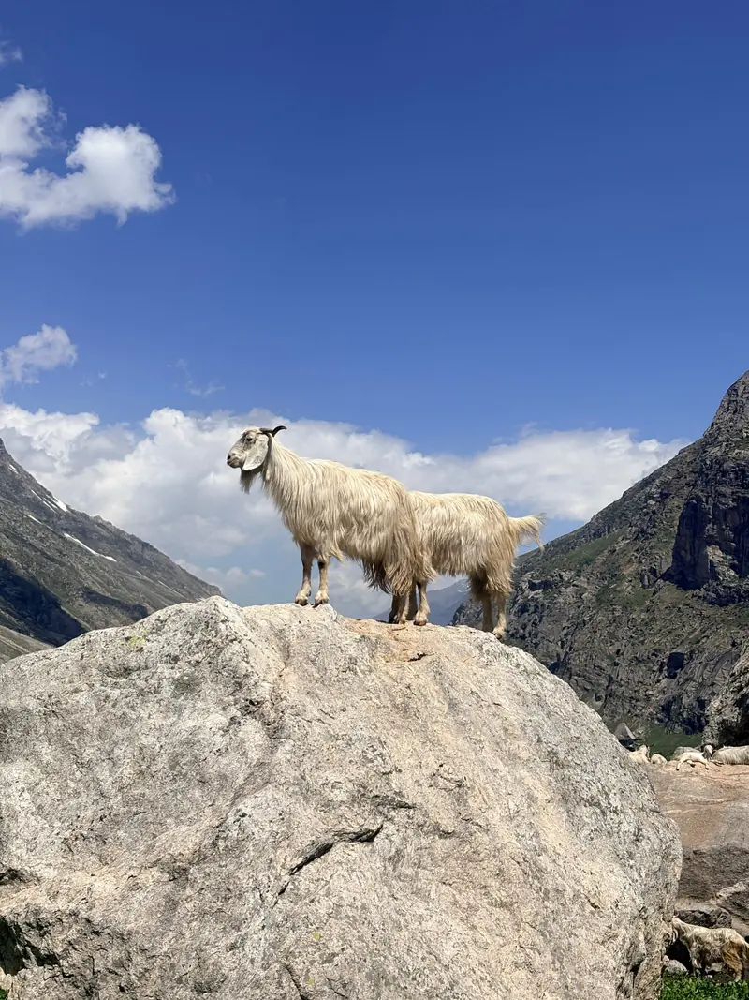
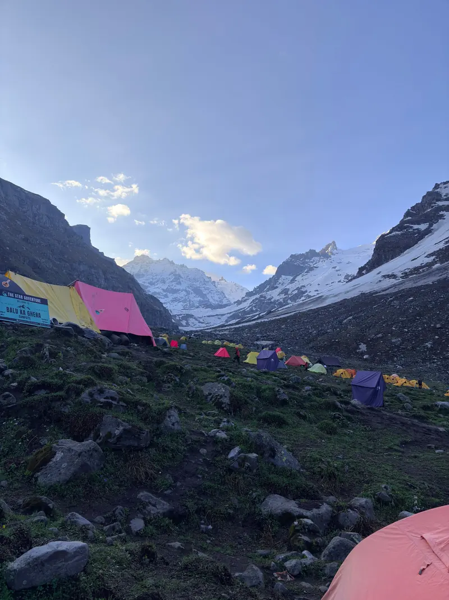
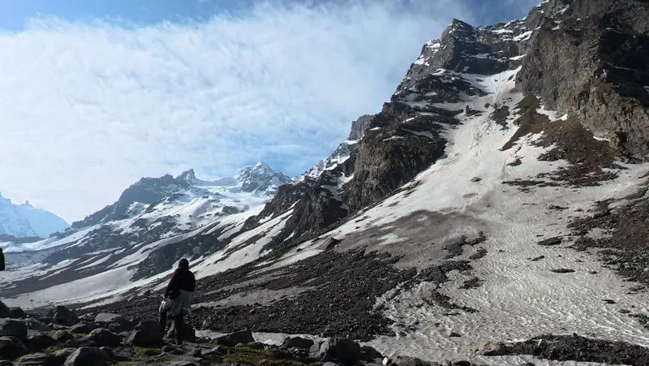
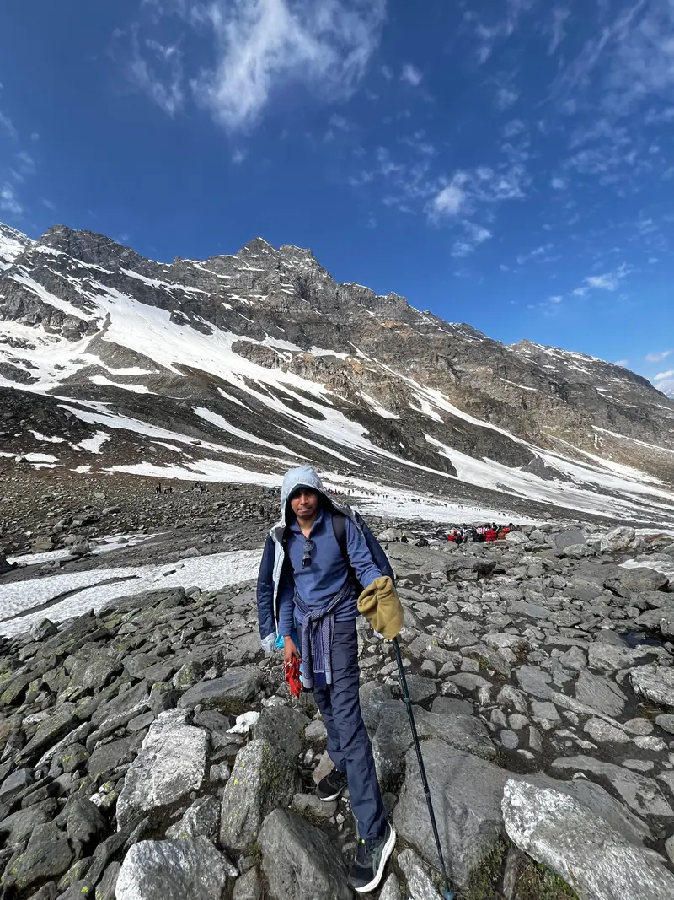
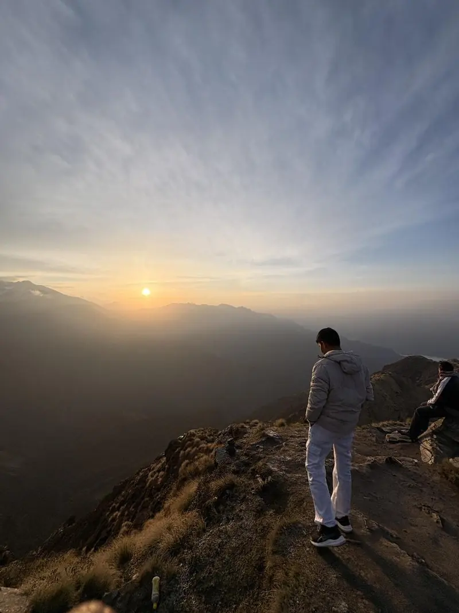
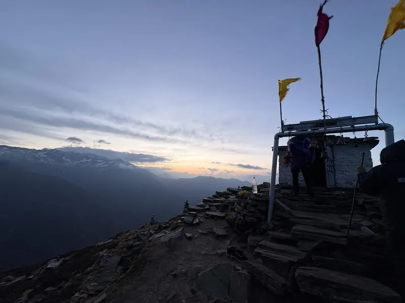
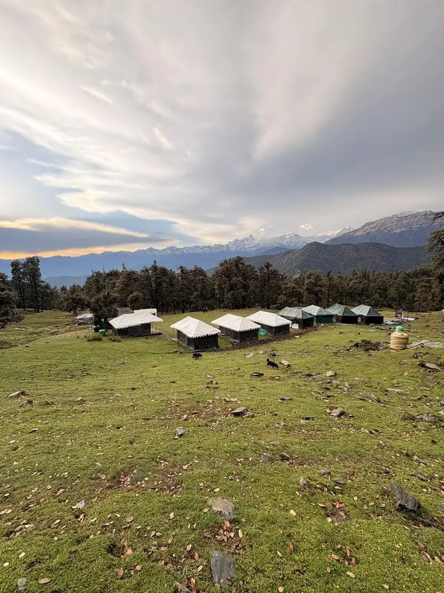

Writing and the mountains.
Essays I’m working on about Indian governance and society, and photos from my treks.
Most of what I write starts with something that doesn’t add up. Welfare schemes that look good on paper and fail at delivery. An economy that keeps growing while poverty holds on. And sometimes it starts on a trek, walking over rock that was once the floor of an ocean.
The habit of asking these questions started with my UPSC preparation, which gave me a solid base in polity, geography and public policy. I’m not a practitioner, only someone who has read closely and cares how these questions get answered. The essays below are still drafts.
The mountains are on this page too, because that’s where most of my time off goes.
Welfare by Design: Why Intent Alone Doesn’t Move the Needle
Articles 38, 41 and 47 promise a fair social order, public assistance, nutrition and public health. Between that promise and the ration shop sits a long chain of forms, databases and officials, and people fall out at every link, whether the scheme is the PDS under the National Food Security Act or a direct benefit transfer.
The Persistence of Poverty: Growth Without Redistribution
Three decades of fast growth have pulled millions out of extreme poverty, and left millions more just above the line, in work that pays too little to climb any further. Wealth, meanwhile, has gathered at the top. Growth was meant to do the work of redistribution; in India it has done only part of it.
Federalism Under Pressure: Centre–State Relations
The Seventh Schedule divides power into Union, State and Concurrent Lists, but the balance has never stayed where the framers left it. Article 356 let the Centre dismiss state governments until the Supreme Court reined it in with S.R. Bommai. Finance Commission transfers under Article 280 shape how much money the states receive, and the GST Council under Article 279A asked them to pool their power to tax. Indian federalism is less a settlement than a running negotiation.
On Reading Ambedkar Today
On 25 November 1949, Ambedkar told the Constituent Assembly that India was about to enter a life of contradictions: equality in politics, inequality in social and economic life. More than seventy-five years on, the warning reads less like history than a description of the present.
An Ocean at 14,000 Feet
The highest mountains on earth are made of seabed. Crossing Hampta Pass into Lahaul, I walked past the layered rock and sediment I had only ever read about in my UPSC geography books. Further east in Spiti, at Langza, ammonite fossils turn up at more than 14,000 ft, left behind by the Tethys Ocean, which closed as the Indian plate drove north into Asia. Alfred Wegener argued in 1912 that continents move, and was dismissed for half a century. The Himalaya is the proof he didn’t live to see.
Hampta Pass, Himachal (14,100 ft)
My most recent trek, crossing Hampta Pass from the Kullu side into Lahaul, with camps at Balu Ka Ghera and Siagoru along the way.














Earlier: Tungnath and Chandrashila, Uttarakhand
October 2024. Chandrashila’s summit is about 12,200 ft, and the climb starts in the dark, before dawn. The sky begins to open around 5am.






Trekking & Mountains
The plan is to go higher than Hampta Pass next.
Chess
I’ve played and studied the game seriously for years.
Cricket
I play, and I follow the game closely.
Reading
Mostly history and political philosophy, with a novel now and then.
Travel
Travel is how I check what I’ve read against how places actually are.